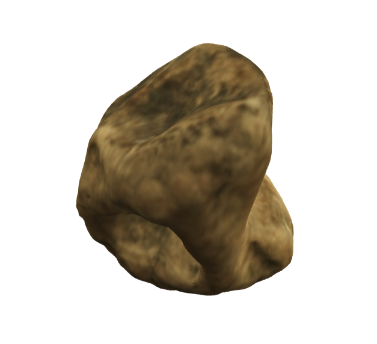

Logo

Lawson Deer Bone Bead AR model
Lawson Deer Bone Bead
Lawson Deer Bone Bead
5mm

Material: Deer Bone
Lawson Deer Bone Origin Story
Beads of many kinds
Beads made from a wide variety of materials have been recovered from the Lawson site. Beads made from animal bone are the most frequently found variety, but beads made from shell, stone, ceramic, fossils and copper also occur.
Lawson Deer Bone Featured Content
140 bone beads found at Lawson
Nearly 140 distinctive beads made from the ends of deer knuckles, like this example, have been found at Lawson. There are also similar, though rare, examples made of elk and bear knuckles. This style is something of an oddity, as it is rarely recovered from other sites.